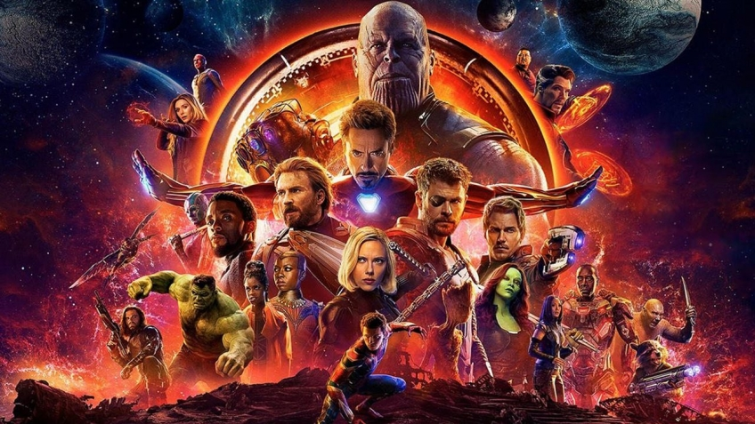

Мстители - война бесконечности
Киновселенная Marvel существует уже десять лет. За это время вышло восемнадцать фильмов. Ещё чуть-чуть, и франшиза обгонит даже «Бондиану», а главное, ни одну из картин в серии нельзя назвать провальной, а это само по себе уникально.
Да, не все стали однозначными хитами (взять хотя бы второго «Тора»), однако общий уровень всегда был на высоте. Именно Marvel определяла направление, в котором развивалось кино про супергероев в минувшее десятилетие. Но возможно, сама Marvel его и похоронит. И дело не в том, что «Мстители: Война бесконечности», блокбастер, который фанаты ждали несколько лет, вдруг оказался пустышкой или халтурой. Всё ровным счётом наоборот.
Мстители призывают не спойлерить, и мы им покорно повинуемся.

Игра стоит всех
Перед братьями Руссо стояла сложнейшая задача — собрать в одном фильме всех главных персонажей киновселенной и при этом рассказать вменяемую историю. Казалось бы, невыполнимо. Под весом стольких героев картина просто развалится. Да, то же самое скептики говорили перед выходом самых первых «Мстителей», но тогда речь шла о совсем иных масштабах. С той поры появились и «Доктор Стрэндж», и «Стражи галактики», и прочие-прочие. Однако вопреки всем опасениям режиссёры и сценаристы сумели всё связать воедино. «Война бесконечности» — гигантская, но цельная мозаика, в которой нельзя с первого взгляда отыскать что-то лишнее или неработающее.
Да, не все герои получили равный хронометраж. По сути, на первом плане остались Тор, Тони Старк и Звёздный Лорд. В рамках глобального сюжета именно у них есть свой путь, в ходе которого персонажи сталкиваются с тем, что должно изменить их навсегда. Простите за витиеватые формулировки, но иначе спойлеров не избежать. Всем прочим участникам достались роли от второстепенных до эпизодических. Но у каждого есть момент, который полностью оправдывает присутствие персонажа в картине.
«Война бесконечности» — это «Империя наносит ответный удар» и «Тёмный рыцарь» в исполнении Marvel. Сравнение отнюдь не случайно, ведь сюжетный костяк у этих совсем разных фильмов, по сути, один. Герои, что раньше одерживали победы ценой малой крови, сталкиваются со злом, которое на деле гораздо сильнее, чем казалось. Таносом нас пугали несколько лет, но мы, как и сами Мстители, привыкли к не особо впечатляющим противникам, которых почти всегда можно одолеть шутя. А потому, когда всё становится донельзя серьёзно, зритель оказывается к этому не готов.
Гнев титана
Понятно, почему именно братьям Руссо доверили ставить главную ленту нынешней фазы. «Другая война» и «Противостояние» были не просто отличными блокбастерами, но и первыми фильмами Marvel, в которых драматические, чисто разговорные эпизоды запоминались едва ли не сильнее баталий. Тоже, к слову, отличных.
Вот и в новых «Мстителях» есть несколько потрясающих сцен, которые без всякого экшена заставят зрителя застыть в оцепенении. И как минимум один такой эпизод связан с Таносом — однозначно лучшим злодеем в киновселенной Marvel. В нём сочетаются мудрость и безумие, благородство и колоссальная жестокость. От него буквально веет мощью. Что самое важное, антагониста в кои-то веки можно назвать глубоким. У него есть свои идеалы, своё мировоззрение и даже относительно понятная мотивация. Джош Бролин, которого мы совсем скоро увидим ещё и в «Дэдпуле», блестяще оживил фиолетового титана. А цифровой грим нисколько не мешал ему отыгрывать богатую палитру эмоций. Вот таким должен был быть Степной Волк в «Лиге справедливости», если бы его создавали прямыми руками.
Бесконечность — предел
И вот одна из первых причин, по которой «Война бесконечности» может стать недостижимой точкой для всех последующих фильмов этой киновселенной. Танос попросту слишком хорош! И конкретно в этой картине раскрыт лучше всего. Мы знаем о нём ровно столько, сколько должны, видели его и в бою, и в драматических сценах. Дальше он уже не будет столь впечатляющим, но и кого-то лучше него у Marvel представить сложно.
То же можно сказать и про взаимодействие персонажей. Когда Человек-паук впервые встречает Стрэнджа, а Тони Старк знакомится с Питером Квиллом, это вызывает восторг. Наконец-то пасьянс сложился. А потом начинается экшен, в котором все герои действуют сообща, объединяют свои уникальные способности. Это как битва в аэропорту из «Противостояния», только масштабнее и разнообразнее. Вот оно, то, чего поклонники комиксов ждали годами или даже десятилетиями. И в этом главная загвоздка. Первое впечатление можно произвести только один раз. Всё последующее будет казаться лишь отголоском «Войны бесконечности». «Империя наносит ответный удар» и «Тёмный рыцарь» завели свои франшизы в такую же ловушку.
Вижн не может помочь друзьям, ведь если он попадёт в руки злодеев, всему настанет конец. Простой и понятный способ вывести из игры слишком сильного персонажа... Пожалуй, главный недостаток новых «Мстителей» именно в том, что они не последние. «Война бесконечности» не окончена, но её кульминация уже миновала. Это пиковая точка для всей киновселенной Marvel. Поклонникам этих фильмов она даст всё, что они так любят: безукоризненный экшен, сочетание лёгкого юмора с уместным пафосом, живых персонажей. Ну а те, кто к франшизе давно охладел, после просмотра могут с чистой совестью поставить на ней крест — всё лучшее они уже увидели.